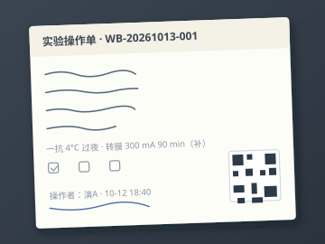

PCN 处理是否改善 5xFAD 小鼠海马 GAD67 的表达？
HPC-001 · WT HPC-002 · 5xFAD HPC-003 · 5xFAD+PCN Marker
WB 通用流程 V3（院内标准）· 查看本次方案
带入值为“方案默认”，未经确认前不代表实际执行。

| 文件 | 用途 | 归属 | 大小 | 上传时间 | 操作 |
|---|---|---|---|---|---|
| IMG_2031现场照片.jpg | 现场照片 | 步骤：一抗孵育 | 2.1 MB | 今天 14:30 | 预览 · 下载 |
| 纸卡_WB-20261013-001.png | 纸卡照片 | 本实验 | 3.4 MB | 今天 09:12 | 预览 · 下载 |
| 定量结果_BCA.csv | 结果表 | 步骤：定量与上样 | 12 KB | 10-12 15:40 | 预览 · 下载 |
| 电泳_现场.jpg | 现场照片 | 步骤：电泳 | 1.8 MB | 10-12 18:35 | 预览 · 下载 |
| 阶段 · 参数 | 方案默认 | 实际情况 | 状态 |
|---|---|---|---|
| 定量与上样 · 上样量 | 20 μg | 25 μg（HPC-002） | 本次已改 |
| 定量与上样 · Marker | PageRuler 26616 · 5 μL | 同方案 | 实际按方案 |
| 电泳 · 电压 / 时长 | 120 V · 75 min | 同方案 | 实际按方案 |
| 转膜 · 条件 | 250 mA · 120 min | 300 mA · 90 min（补录） | 本次已改 |
| 封闭 · 封闭液 / 时长 | 5% BSA · 室温 60 min | 同方案 | 实际按方案 |
| 一抗 · 抗体 / 稀释 | Anti-GAD67 · 1:1000 | — | 方案默认 · 未确认 |
| 成像 · 曝光 | — | — | 未记录 |
原始资料 4 个（见「原始资料」页签）；曝光原图待成像阶段上传。
整理后的 Figure 在汇报中引用；本页不重复填写分析过程。